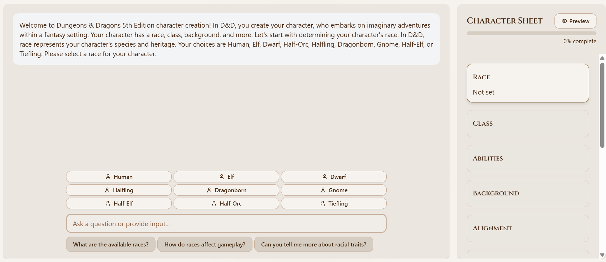

🐉
'">
Christian Bakos Leirvåg
Fullstack developer currently consulting at Capgemini, delivering end-to-end data solutions for clients like ConocoPhillips. MSc in Data Science from DTU. I've built web apps, mobile apps, and SaaS MVPs from scratch — tested with real users, iterated on feedback, and deployed to production.
Technical Stack